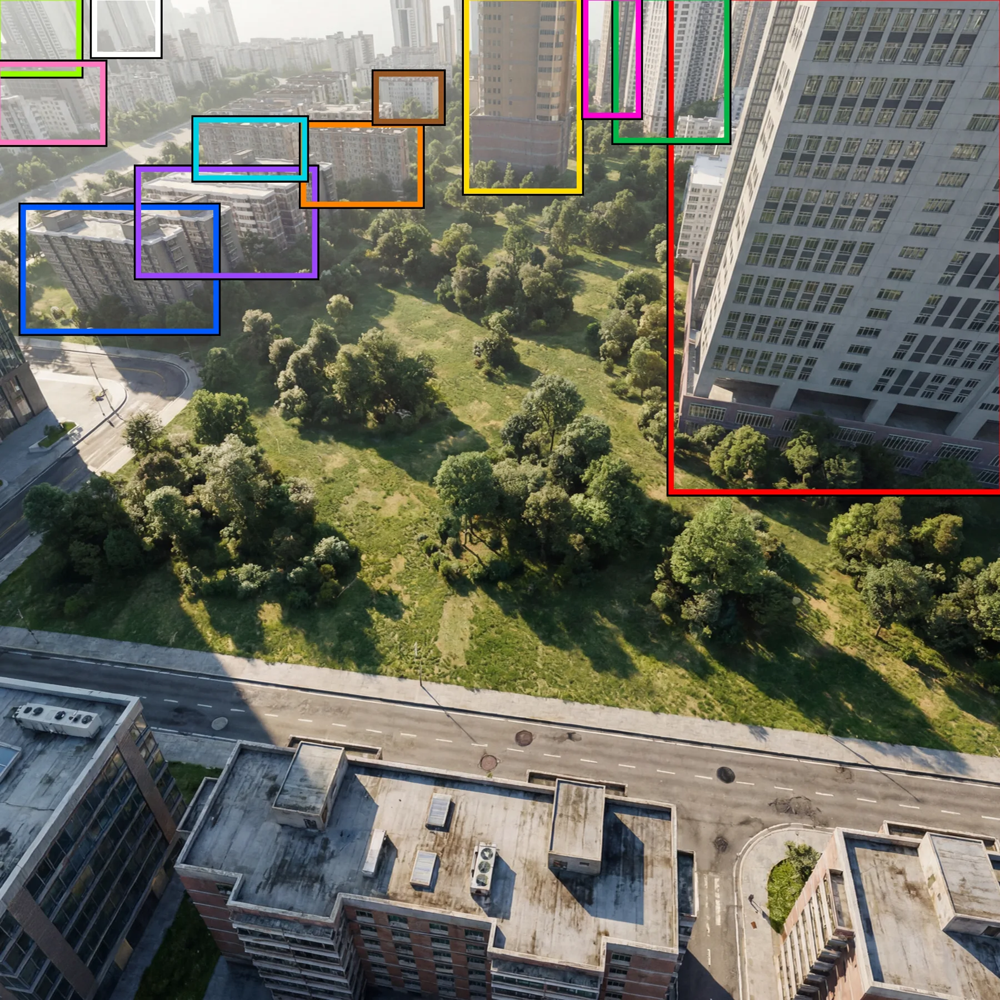

Zhengrong-Spatial-Aware 1.0：3D 多模态空间智能的工程适配报告
Zhengrong-Spatial-Aware 1.0: Advancing 3D Multimodal Intelligence
两条可复现的适配流水线：HiSpatial-3B 目标集 1.73%→79.89%（3,600 步），风格化集 14.9%→55.1%；Qwen3-VL-8B 20.74%→45.27%、32B 30.79%→47.60%。价值在工程链路与「混合域数据比例」这一经验，不在方法创新；数据集未公开、无逐任务拆分与方差，引用需谨慎。
target accuracy
styled split accuracy
Qwen3-VL accuracy
fine-tuning steps
作者、单位与技术谱系 · Research context
作者与单位
研究脉络
- HiSpatial（PaliGemma2-3B + 分层 3D 空间理解）方法基座关系：本文第一条流水线的基座：把 3D 空间智能分成「基础几何感知 → 物体级 → 物体间关系 → 抽象空间推理」四层，并在输入侧注入点图；本文只做领域适配，不改架构。[论文 §II-A]
- MoGe 单目几何（Wang et al.）技术组件来源关系：HiSpatial 分支的逐像素 XYZ 全部来自 MoGe，且原文明确其为仿射不变点图——这直接决定了度量类问题的尺度来源问题。[论文 §II-A 与 §IV-B]
- Qwen3-VL（三模块 VLM，含 MRoPE 与 DeepStack）第二条流水线基座关系：作为通用多模态对照：不注入显式几何，只靠指令微调，用来分离「几何输入」与「领域适配」两种收益。[论文 §II-B 与 §V-C]
合作网络
- 北京飞渡科技 ↔ 西南大学（校企共同署名）Beijing Freedo Technology Co., Ltd. → Southwest University关系：共同署名（同一论文）[论文首页单位标注]
- Zhengrong-Spatial-Aware ↔ HiSpatial / Qwen3-VL（双基座依赖）Zhengrong-Spatial-Aware 1.0 → HiSpatial-3B / Qwen3-VL checkpoints关系：明确技术依赖（从公开检查点继续训练）[论文 §IV-C、§IV-D]
- HiSpatial 分支 ↔ Qwen3-VL 分支（同评测接口对照）HiSpatial pipeline → Qwen3-VL pipeline关系：同一数据与评测协议下的对照[论文 §IV-E 与 Table II/III]
作者与单位取自论文首页（企业 + 高校各一）；「HiSpatial 以 PaliGemma2-3B 为骨干、点图来自 MoGe 且仿射不变」是 §II-A 的原文事实；「两分支不是严格控制变量的对照」是依据 §IV-C/§V-C 的训练设置差异做的解读。原文未标通讯作者，不推断导师或隶属关系，也未发现代码/数据发布入口。
方法本质拆解 · What actually changed
是不是微调？
两条分支都是微调，但方式不同：HiSpatial 从官方 3B 检查点做全参数 SFT（等效 batch 32，1,200→3,600 步）；Qwen3-VL 用 4-bit 量化 + LoRA，视觉编码器冻结、只训语言侧低秩适配器（多模态连接器可选）。没有从头训练，也没有改模型结构。
有没有额外约束？
约束来自输入与数据配方：HiSpatial 必须额外提供逐像素 XYZ 点图（由 MoGe 单目估计，仿射不变、无绝对尺度保证），训练数据必须与通用 VQA 按约 1:1 混合以保住通用能力；评测侧用任务特定规则（计数精确匹配、度量相对容差、开放题语义归一化）。这些约束里最弱的一环是点图的尺度：度量类问题恰恰要求绝对尺度，而 MoGe 原始公式是仿射不变的。
推理/后端到底做了什么？
推理是标准的多模态前向：图像（以及 HiSpatial 的点图分支）→ 模型 → 文本答案，批量跑 JSONL 并写出统一预测文件；没有搜索、没有工具调用、没有几何后处理或数值计算模块，度量答案完全由语言侧生成。这意味着数值精度受限于 VLM 的读数与算术能力，而不是由几何管线保证。
方法本质是什么？
本质是「把几何作为输入模态 + 用混合域数据对齐输出分布」：几何不进入任何优化后端，只作为额外通道喂给 VLM；真正被优化的东西是「在目标问答格式上的输出分布」，并用通用数据防止它坍缩。它没有做的是几何与语言的联合推理、尺度校准、或数值计算外包——所以它对「需要精确度量」的问题上限，仍由点图尺度质量与 VLM 算术能力共同决定。
输入图像与 MoGe 单目点图；把点图作为额外模态喂给 HiSpatial-3B 做全参 SFT，并用约 1:1 通用 VQA 混合域训练；直接效果是自建度量问答从 1.73% 提到 79.89%、风格化集从 14.9% 提到 55.1%，但点图贡献与领域适配贡献未被分离。

桥接价值Bridge
桥接价值
这篇不是方法论文，而是一份「把 3D 几何塞进 VLM」的施工记录，价值在于它把两类路线放在了同一套评测接口下：显式几何输入（HiSpatial-3B + MoGe 点图）与纯指令适配（Qwen3-VL 8B/32B + QLoRA）。结果给出一个有用的量级感：显式点图路线在自建度量问答上能到 79.89%，而通用 VLM 即使 32B 也只用 QLoRA 到 47.60%——说明度量空间推理仍高度依赖输入里的几何，而不是参数规模。对我们做 3D 空间理解评测或给机器人前端加「度量问答」能力时，这是一条可照抄的工程基线。
方法与模块Method
方法摘要
数据层把场景整理成「图像 + 12 类问题 + 答案」的 JSONL，按 sample_id 稳定映射到图像，支持原始 RGB、风格化图、带框叠加、实例掩码与位姿元数据。HiSpatial 分支先用 MoGe 逐图估出稠密 XYZ 点图并序列化成 WebDataset，再与 LLaVA-NeXT 风格的通用 VQA 按约 1:1 混合，从 HiSpatial-3B 检查点做全参数 SFT（初期 batch 4、等效 32、1,200 步、每 400 步存一次，后续延长到 2,400/3,600 步）。Qwen3-VL 分支把同一监督转成多模态对话格式，4-bit 量化 + LoRA（视觉编码器冻结、LoRA 加在语言侧投影），1,000 个场景按 900/100 切分，每场景 12 题即约 10,800 训练 / 1,200 测试实例。两条分支最后汇到同一个批量推理与任务感知评测器：计数直接比对、度量做数值解析 + 相对容差、开放答案做语义归一化。
可迁移模块
可迁移的是四个工程件：一是「点图预计算 + 序列化」解耦几何估计与模型优化，让同一批点图可被多次训练复用，也避免每步重复推理；二是混合域配比这个显式超参（目标:通用 ≈ 1:1），以及「答案格式本身属于训练域」这条经验（自由文本与多选混训会破坏自由文本，需 8:2）；三是统一 JSONL 评测接口，使 HiSpatial、Qwen3-VL、LLaVA-3D、SpatialRGPT 能在同一脚本下比较；四是任务感知评分（计数精确匹配、度量相对容差、开放题语义归一化）——这比单一准确率更能反映「错在单位还是错在几何」。不宜照搬的是它的结论强度：所有数字来自自建、未公开的数据集，且没有逐任务拆分。

证据Evidence
关键证据与数字
HiSpatial 目标集：未适配 1.73%，1,200 步 64.69%，2,400 步 73.90%，3,600 步 79.89%；另一批风格化数据：14.9% → 49.2% → 52.8% → 55.1%。Qwen3-VL：8B 从 20.74% 到 45.27%，32B 从 30.79% 到 47.60%（混合域 QLoRA）。复现性自检（作者称仅作实现校验、非完整复现）：CV-Bench-3D 94.17%、CV-Bench Relation 94.77%、EmbSpatial 73.90%、RoboSpatial 78.05%。数据配比经验：naive 混合自由文本与多选监督会使原自由文本任务明显下降，改用 8:2 后恢复。注意「待核验」项：数据集规模只给了 Qwen 分支的 1,000 场景/10,800 训练实例，HiSpatial 分支的场景数与划分未单独给出；每条结果只报单一数字，无随机种子与置信区间；也没有「RGB-only vs RGB+点图」的同条件消融，所以 79.89% 里有多少来自点图、多少来自领域内微调，无法从原文分离。
边界与下一步Limits & Next Step
边界与风险
作者列出的后续工作本身就说明了边界：目标/通用数据配比、逐任务评测、输入格式消融、以及「单目点图 vs 直接来自 3D 资产/CAD 的几何」的比较都还没做。因此它目前只能支持「这条流水线能跑通并显著提升目标集准确率」，不能支持「点图是提升的主因」。风险有三点：自建数据集不公开、无代码与权重发布，复现只能靠自己搭；评测是任务感知的（计数/数值容差/语义归一化），跨报告比较需确认评分口径；Qwen3-VL 分支的 8B/32B 提升幅度接近（+24.5 vs +16.8 点），但起点不同，不能据此说小模型更受益。另外 HiSpatial 分支从 1.73% 起步，说明基座在该数据集上几乎完全不会做——这种「近零起点」的提升幅度对领域迁移问题很敏感，换个数据集未必复现同量级。
下一步实验
如果要在我们自己的数据上复用，先补三个对照再谈结论：第一，同条件跑「RGB-only」与「RGB+MoGe 点图」两版，固定步数与数据混合，直接测点图带来的增量（这是原文缺的最关键一格）；第二，逐任务拆分 12 类问题的准确率，看提升集中在计数/极值（偏语义）还是高度/距离（偏度量），后者才是几何真正起作用的证据；第三，把 MoGe 点图换成带尺度真值的几何（若我们有 CAD/位姿），检验「单目点图的尺度误差是否是当前瓶颈」。工程上可以先把「点图预计算 + WebDataset 序列化 + 统一 JSONL 评测」这三件搬过来，成本低、收益确定。